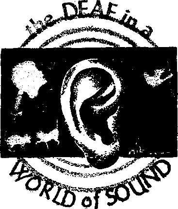
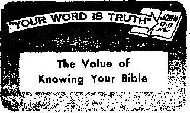

RUSSIA
By *'Awok»l" ctirMpondwt In Finland
WAGES OF SIN —SLEEP OR TORMENT? Simple facts about the condition of the dead
Understand the causes behind the unstaH“ govemments of France
They break the wind, control the climate, conserve the soil
Helping them "hear'
THE MISSION OF THIS JOURNAL
New* BOurcM that are able to keep you awake to the vital iwuas of our1 times must be unfettered by censorship and. salflsb Interests. “Awake I” has no fetters. It recognizee facts, faces facte, is free to publish facts. It is not bound by political ambitions or obligations; it is unhampered by advertisers wnos* toes must not be trocden on; it is unprejudiced by traditional creeds. This journal keeps Itself free that It may speak freely to you. But it does not abuse Its freedom. It maintains integrity to trtith.
“Awake J" uses the regular news channels, but is not dependent on thenv Its own correspondents are on all continents, in scores of nations. From the 4bur comers of the earth their uncensored, on~thc~scenes reports come to you through these columns. This journal’s viewpoint is not narrow, but is international. It is read in many nations, in many languages, by persons of all ages. Through its pages many fields of knowledge pass in review—government, commerce, religion, history, geography, science, social conditions, natural wonders—-why, its coverage is as broad as the earth and as high as the heavens.
"Awake 1” pledges itself to righteous principles, to exposing hidden foes and subtle dangers, to championing freedom for all, to comforting mourners and strengthening those disheartened by the failures of a delinquent world, reflecting sure hope for the establishment of a righteous New World.
Get acquainted with “Awakel" Keep awake by reading “Awakel”
PUBt.ISHID BBMIMOMTHLT BT watchtower bible and tract society, inc.
11? Adams Street Brooklyn 1, N- "Y., TJ. S. A,
Printing this issue: 1,650,000 Five cents a copy
Otter limitfet Is which ‘’Awthl’1 Is pabllsted: SeMl«flthly—Afrikaans, Finnish, French, German, HoIIandlkh. Italian, Norwecltn, Bpanlsli, Swedish, Meatiily—Diniflh, Creek, Japanese, Portuguese, LTkraiidan.
Offices Yearly subscription rate
America. U.SM 117 Actetns St, Br&oklyD 1, N.Y, Alrtrallft. 11 Beretford Bif.. Strathfleld, N.S.W, 8/-CanHa, 160 Brldieland Are.. FirkBwl F.0,r
Toronto io, Ontario fl
EDflliol, S4 Crareu Terrace, London. W. 2 7/-
#«T ZwZtffA tf.p.a Boi 3ft JFriJfctfiro, IX 1 77-Soith Africa, Private B*f, Elandrionteh, TtL 7/<
Remittance! should be sent to office tn foot caun-try in ccmpLHirte with renUtfona to prarnatce safe delfrtfy of money. Bemlttancea are cctopted at Brooklyn from countries where no office la located, by International money order only. Subscription rates In different countries are here stated in local currency. Notice of miration (with renewal blank> 1» sent at least two taora before sdJMription er-pins. Change tf tddrett when sent to office
he axpseted effective within one nontfa, Send your old as well as new address.
Entered as second-class matter at Brooklyn, N.Y,, Act of March 3, 1379. Printed In U.S.A.
CONTENTS
Wages of Sin—Sleep or Torment?
One Nation’s Expendables for Peace 15, Are Church Statistics Inflated?
"The Hypocrisy of Men Who Speak Lies” 17
"Your Word Is Truth”
The Value of Knowing Your Bible 25
Jehovah’s Witnesses Preach In All
Velum* XXXVII
Brooklyn, N. Y., April 8, 1m
Number 7
TATHAT does it mean to be objective JUL and why is it desirable that we be objective? To be objective means to be able to approach or discuss a question or probi lem without being swayed by emotion or personal considerations. This is notan easy thing to do, which is why so many people refuse to discuss religion. They cannot remain objective, but get excited. Yet we must be objective if we would know the truth, and the truth we should want to know, for the truth has power: "The truth will set you free.”—John 8:32, New World Trans.
The failure to be objective is one of the basic reasons why there is such disagreement among philosophers, among scientists and among the religious as to what is truth. Self-interest warps the judgment and so men, on the one hand, reject the truth when it is brought to their attention and, on the other hand, accept as truth that which is not the truth, apparently in all sincerity and yet not actually with clean hearts. To appreciate the truth we must approach it with “a right and good heart.*’—Luke 8:15, New World Trans.
This is true in spiritual or religious matters, in fact, there most of all. Self-interest, lack of objectivity, blinds one to that which is the truth and therefore to that which is to one’s greatest interest ultimately. The clergy of Jesus’ day furnish a pointed
example. Their selfishness so blinded them, that they could not see that Jesus was fulfilling the many prophecies regarding the Messiah. Yes, no one should have been able to appreciate that fact more than they, with all the opportunities they had to study the Scriptures.
Yet it was not they but the common people who were heard to make such remarks as: ‘This is for a certainty The Prophet” “This is the Christ.” “When the Christ arrives, he will not perform more signs than this man has performed, will he?” These common people gladly heard Jesus, going to the temple early in the morning to hear him.—John 7:40, 41, 31; Luke 21:38, New Worid Trans.
. But their religious leaders simply could not come to such obvious conclusions. Why? Because they were unable to be objective, As Jesus plainly pointed out to them: “How can you believe, when you are accepting glory from one another and you are not seeking the glory that is from the only God?” Jesus' teaching and miracles posed a threat to their position in the community and so they simply could not make room for his sayings, for the truth about him, in their minds and hearts. —John 5:44, New World Trans.
The evolutionists of modern times furnish another example. Proceeding on the premise that the Bible simply could not be true, they are unable to be objective. Thus, if the desire had been merely to ascertain the truth, why should Lecomte du Nuoy have termed certain scientific evidence as having "all the unsatisfactory characteristics of absolute creation”? Why were these facts termed unsatisfactory? Did he not thereby admit his lack of objectivity, that he had hoped to find other proof? The evidence he found was valid, but it was unsatisfactory to Du Nuoy because it did not prove what Tie wanted it to prove. —Human Destiny, page 79.
Nor was Darwin himself any more objective, Says he in Origin o/ the Species (Vol. 2, page 49, 6th ed,): * ‘Geology assuredly does not reveal any such finely graded organic chain; and this perhaps is the most obvious objection which can be raised against the theory. The explanation Ues, however, in the extreme Imperfection of the geological record,”
Aside from the Bible, the geological record is the only one that can testify to man's early history. Why should Darwin term It ‘extremely imperfect’? How does he know, how could he have proved that it was? Obviously, Darwin did not look for a theory on the basis of the facts at hand, he was not objective, but he invented a theory and then looked for evidence to support it. Not finding it, he speaks of the “extreme imperfection1’ of* the geological record. But the fact is that this geological record is not only 'extremely imperfect’ as regards the origin of man, but nonexistent. even as Professor W. Branco of Berlin University said: “Paleontology tells us nothing on the subject—it knows no ancestors of man.” It is because of tenaciously holding to evolution in spite of the lack of evidence that unobjective men of science become the logical prey of the perpetrators of the "Piltdown man” hoax, and who knows how many others.
People who believe in the happening of miracles today invariably are not objective. They want to believe in miracles, they want to see them happen, not because such performances would bring honor to God’s name, but they want to see them merely out of curiosity, even as was the case with Herod Anti pas, who wanted to see Jesus perform a miracle. So they become the logical dupes of the superstitious little children who imagine they have seen a vision of the “virgin Mary,” as was the case with the hundreds of thousands that flocked to Heroldsbach, Germany, and to Sabana Grande, Puerto Rico, that were only io be disappointed and to have their own church afterward reject these reports as fraudulent. In the same category must be placed those who are deceived by modem so-called "faith healers.”
We cannot escape it. If we would avoid being deceived and if we would be able to appreciate the truth when we meet it we must be objective, we must keep selfish considerations from influencing our thinking. We must be willing to pay whatever price the truth costs in the way of preconceived nations, popularity or material gain. We do not need a higher education to appreciate the truth, but we do need to be free from selfish motives; we must have a "good and right heart,” And once having found the truth, and purchased it, as it were, we should net let it go for any consideration. So, as the wise man counsels, "buy the truth, and sell it not.”—Proverbs 23:23.
A man In California recently lived up to his name; new he is trying to live it down. Los Angeles police arrested the 36-year-old man for illegally crossing a busy street At headquarters the man identified himself as J. Walker.
one need* Io be a theologian to under-stand what the Bible says about the wages of sin. It is that dear* Where are the dead? Are they really dead? These are not difficult | question* when we let God1* Ward provide the answer*.
SIN pays wages. What are those wages?
An eternity of torment in red-hot fires? Or sleep in death ? When the Bible writers speak of death, do they associate it with sleep or with torment? When Jesus* friend Lazarus died and was resurrected after four days of being dead, had he been sleeping or had he been in torment? When Christ Jesus died and went to the Bible hell for three days, had he been asleep or in torment? We should not be afraid of these questions, but we should approach them in the Scriptural way, “with your power of reason.”—Romans 12:1, New World Trans,
The Creator himself told Adam what the wages of sin are. In clear language Jehovah God addressed Adam: “As for the tree of the knowledge of good and bad you must not eat from it, for in the day you eat from it you will positively die?* Was there any warning about eternal torture in red-hot fires taking place after death, so that the real wages sin pays are torment? There was none. Then are we to think that Jehovah, the God of justice, would hurl Adam into an eternity of torment without a warning? As we should expect, Adam was sentenced according to the warning God gave him. Said the Supreme Judge to disobedient Adam: “In the sweat of your face you will eat bread until you return to the ground, for out of it you were taken. For dust you are and to dust you will return?1 Can dust suffer torment? —Genesis 2:17; 3:19, New World Trans,
Death is what Adam earned. Death is what he received. After Adam’s death would God change the sentence to eternal torment? That would be impossible, for as God says: “I, Jehovah, change not.” Some 4,000 years after God executed the death sentence upon Adam, an apostle of Christ Jesus confirmed that sin’s wages were still unchanged: “The wages sin pays is death?’ —Malachi 3:6, Am. Stan. Ver.; Romans 6:23, New World Trans,
But some persons say that death is for the body, torment for the soul. That brings up the questions: What is a soul? Can a soul die? Genesis 2:7 shows that a soul is a living, breathing, sentient creature; it shows that Adam uxm a soul, that he did not have a soul separate and distinct from his body. The Bible is dear that the soul is not immortal: “The soul that sinneth, it shall die.” (Ezekiel 18:4, Am, Stan, Ver.) That leads to another question.
Death is the end of any form of life. For man it is a state of unconsciousness, the end of intellectual and physical activity. Thus if eternal-torment teachers are to be believed, the dead are not really dead. But what really counts is not what men say but
what God says, Men can lie; God cannot So, according to God's Word, are the dead really dead ? Dead they are. Says the Bible: “The living know that they shall die: but the dead know not anything, neither have they any more a reward; for the memory of them is forgotten. Whatsoever thy hand findeth to do, do if with thy might; for there is no work, nor device, nor knowledge, nor wisdom, in Sheol, whither thou goest.”—Ecclesiastes 9:5, 10, Am. Stan. Ver.
Sheol is the Hebrew word originally used by Bible writers to represent grave-dom or the common grave of mankind. The translators of the Authorized Version Bible confused matters when they translated this one Hebrew word by three different English words: pit, grave and hell. This is misleading because it causes persons to think that hell is something different from the pit or the grave. Actually all three mean the same thing, for, wherever Sheol appears, it refers to the death state. This death state the Bible likens to sleep.
Job was a faithful servant of God who was afflicted by the Devil with a most loathsome, painful disease. Job's wife turned against him; his friends did likewise. According to the man-made idea of hell, Job was having about as much of it as any man could have on earth. If Job believed that the Bible hell or Sheol meant torment in flames that are never quenched, it is unreasonable that he should have uttered this prayer: “Oh that thou wouldest hide me in Sheol, that thou wouldest keep me secret, until thy wrath be past.” Concerning his hope Job added: “It shall go down to the bars of Sheol, when once there is rest in the dust.” Job thus hoped to rest from his present tormented state by going to the Bible hell and sleeping in the dust of the earth until the resurrection.—Job 14:13; 17:16, Am. Stan. Ver.
In the Bible, death is often associated with sleep, by the frequent appearance of the phrase “asleep In death.” A few examples follow: "The day our forefathers fell asleep in death.” “bavid, on the one hand, served the express will of God in his own generation and fell asleep in death and was, laid with his forefathers.” “If her husband should fall asleep in death, she is free to be married.”—2 Peter 3:4; Acts 13:36; 1 Corinthians 7:39, New World Trans.
If any man should know whether the dead are asleep or in torment, certainly it would be one who has come back from the dead. Lazarus, the brother of Mary and Martha, was one of those who came back from the Bible hell or Sheol, or Ha’des, as it is called in Greek, Yet Lazarus spoke not one word about being in torment. Christ Jesus, who resurrected Lazarus, tells us in conversation with his disciples what death means. “He said to them: 'Lazarus our friend has gone to rest, but I am traveling there to awaken him from sleep? Therefore the disciples said to him: 'Master, if he has gone to rest, he will get well? Jesus had spoken, however, about his death. But they imagined he was speaking about taking rest in sleep. At that time, therefore, Jesus said to them outspokenly: ‘Lazarus has died? ” (John 11:11-14, New World Trans.) So none other than the Son of God identifies death with sleep, not torment.
Hell Neither Hot nor Eternal
Teachers of torment after death say sinners go to hell. But the Bible says good people go there too. Teachers of torment say that hell is eternal. But the Bible says that hell is to be destroyed. Again we must “let God be found true, though every man be found a liar?’—Romans 3:4, New World Trans.
God's Word tells us at Psalm 16:10: “Thou wilt not leave my soul in hell; nei-
ther wilt thou suffer thine Holy One to see corruption.” This Scripture is quoted by the apostle Peter at Acts 2:31 and is specifically applied to Christ Jesus, proving that Jesus, though a man without sin, went to the Bible hell. If hell were a place of torment for eternity, then Jesus would still be there; he could not have gotten out.
But hell is not eternal. Telling of the time when hell, Sfteol or Hades will be destroyed, Christ the Revelator says: “And the sea gave up the dead which were in it; and death and heli delivered up the dead which were in them: and they were judged every man according to their works. And death and hell were cast into the lake of fire. This is the second death.” (Revelation 20:13, 14) If hell is the lake of fire, as some say, how is it cast into itself ? The truth is that hell is the common grave of mankiiid and that it will be destroyed when the resurrection will have emptied it of its contents of dead, unconscious people. The lake of fire into which hell is hurled is symbolic language for the second death or state of death from which there is no resurrection. .
Another symbol for everlasting destruction is Gehenna. This word occurs twelve times In the Bible. But Bible translators have often obscured this by rendering- the word as “hell” or the expression “fire of Gehenna” as “heli-fire.” (Matthew 18:9) This has naturally, but wrongly so, caused some to think that hell is hot. Explains The Encyclopedia Americana (1942 ed., v. 14, p. 81): “Much confusion and misunderstanding has been caused through the early translators of the Bihle persistently rendering the Hebrew Sheol and the Greek Hades and Gehenna by the word hell." The use of the additional word hell-fire for “fiery Gehenna" has only heightened the misunderstanding,
Gehenna is the Greek word for the Valley of Hlnnom at Jerusalem. Therein a fire was kept burning. The waste products of the city, as well as bodies of dead- animals and some bodies of executed criminals thought to be unworthy of a resurrection, were thrown into Gehenna. It is a fitting picture of the second death. Just as the lake of fire symbolizes everlasting destruction, so does Gehenna. The willfully wicked, such as the Jewish clergy in Jesus’ day, go to Gehenna and “shall sleep a perpetual sleep, and not wake.”—Jeremiah 51:57, Am. Stan. Ver.
It was also at the Valley of Hinnom in early times that children were burned to death in sacrifice to the pagan god Molech. But Jehovah showed that burning live people in fire is repugnant to him. Said God: “They have built the high places of Topheth, which is in the valley of the son of Hinnom, to burn their sons and their daughters in the fire; which I commanded not, neither came it into my mind.”—Jeremiah 7:31, Am. Stan, Ver.
Thus Jehovah goes on record as being not only opposed to tortnent of people by fire but also as never having had ft enter his mind. God is just. His own Word says that the wages of sin is death. And the dead in the graves are asleep, not in torment.
When the British government announced recently that it had annexed the tiny island of Rockall—an uninhabited rock in the Atlantic Ocean more than 200 miles west of Scotland—a London newspaper had to have some fun. Said the newspaper: “Pioneers, oh pioneers'. Alter the loss ol India, the Sudan and The Eneyclopcedia Britannica, we are at last re-asserting ourselves.’’
«k«ONOTlahgh, iPI do not weep jail —try to un
derhand." Those words, written by1 the Dutch philosopher Spinoza, . might well be ad- ' dressed to anyone & considering the • political situation * in France, for many people oytside France are inclined either to bemoan French governmental instability or to treat it as a huge joke. But it is no joke to those living there. And most
mm
NATION WHOS MESINT WAS MORTGAGED BY RS FAST
■y "Awakrf' comipondvnf ' In Franc*
I POPU
Western observers admit that France is indispensable to the Atlantic alliance, if for no other reason, because of its geographical position. So, since the situation in France cannot be passed oft with a sentimental tear or with a cynical smile, let us try to understand.
Commenting upon the general elections that took place in France on January 2, 1956, the influential Paris daily Le Monde ruefully admitted: "The elected Deputies are the most faithful reflection of the electorate seen in a long time and are proportioned according to the divisions and subdivisions of the country.”—Le Monde, January 4, 1956.
Three Unfinished Revolutions
Most of the divisions that split this country and that are reflected in its current politics can be traced back to the failure or partial failure of three revolutions: the Reformation, the French Revolution of 1789 and the Industrial Revolution.
It should never be forgotten that the Reformation did not succeed in France to anywhere near the same degree as in many other countries of Europe. To this day the Catholic Church remains a powerful influence in France and holds the allegiance of a good percentage of the population. The clerical issue is one of the most divisive forces in the French political scene. Currently, this can be seeh in the quarrel over state aid to Catholic schools, and smoldering underneath is the question of creating a United States of Europe, which many Frenchmen interpret as a Catholic effort to re-establish the Holy Roman Empire. Probably in no other country of the West are Vatican politics discussed so thoroughly and openly as in France. In the minds of many of the French, the Roman Catholic Church stands for the monarchy and the nobility, and needs to be constantly watched if free government is to be maintained. The failure of the Reformation in France left divisive seeds for the future.
The Revolution of 1789 was, in fact, a revolt against the clergy and the nobility. What is often overlooked is the fact that the resulting Republic was not accepted by all Frenchmen, so that it also has become one of the fundamental divisive factors of French opinion. The divisions in respect to the Revolution can be roughly sketched as follows: (1) those who never accepted
It form'the traditional Hight; (2) those Who think it more or less attained Its goals form the political Center; (3) those who think it did not go far enough form the traditional Left.
Most economists concede that, although a success politically, the Revolution failed to bring about economic reforms, so that social injustices continued. This partial failure of the Revolution sowed seeds of social unrest for France’s future.
The third historical source of France’s present divisions and subdivisions lies in the fact that the French Industrial Revolution was never really completed as were the English and the American revolution. The French character of rugged individualism took less kindly to the methods of large-scale organization, mass production and standardization that have been the upshot of the Industrial Revolution in most countries. The number of independent craftsmen, small shopkeepers and owners of small-scale Industries in France is enormous in comparison with most industrial nations.
The astounding success of the Poujade Movement in the recent elections can partly be attributed to the revolt of small craftsmen and tradesmen against state interference in favor of more efficient, large-scale manufacturing and distribution methods planned by what they call the technocrats. The partial failure of the Industrial Revolution in France left a large body of malcontents who find themselves obliged either to change their methods or to go out of business if France is to compete with other industrial nations.
The French Political Scene
From the foregoing it will be seen that these divisions stemming from the three unfinished revolutions cut across each of the three basic elements of which the nations of this world are composed, namely: religion, ■ politics and commerce. It Is inevitable—in fact, it is a tribute to the democratic process in France—that these fundamental differences should be reflected in the current French political scene. In that respect France is probably more truly democratic than most other nations, since the French National Assembly is a fairly accurate picture of the tendencies among the people, much more so than a two-party system could ever be. In his book Inside Europe John Gunther rails France “the reductio ad absurdum of democracy” (page 182). Which raises the question as to whether democracy, pushed to its extreme limits, is able to continue existence.
However that may be, France is committed to the democratic form of government. So to understand its workings we are more or less obliged to consider its political parties. And in that respect, France can boast of a selection that is second to none—the whole range, from Communist red to clerical Hack! In fact, at the beginning of the recent election campaign, the French minister of the interior registered no less than twenty-eight different parties or factions!
But take heart. We do not have to study them all. Running roughly from Left to Right, they can be reduced to the seven following groups.
The Communist party: The French Communist party is an offshot of the Socialist party. The latter, founded in 1905, although accepting the broad principles of the Marxist doctrine, developed two tendencies as to its application. These two trends grew farther and farther apart until December, 1920, when the Tours congress of the Socialist party split over affiliation with the Communist Third International. Those in favor quit the congress, regrouped, and the French Communist party came into being. Ten years
later, it had 40,000 card-bearing members and by 1947 it claimed a peak membership of 907,700—the second-largest Communist party outside the Soviet Union. Although its membership has dropped by more than half since 1947, It has retained a constant voting strength of about five million—a quarter of the French electorate! It entered the recent elections with 98 deputies in the National Assembly, and came out with 15Q. (including six fellow travelers).
The Socialist party: Originally founded (in 1905) as a revolutionary party dedicated to the socialization of the country's means of production and exchange, the French Socialist party was for many years the only champion of the working classes. The Communist party has stolen much of its thunder In this respect, and, although still a party of the Left, the Socialist party now finds its chief support among office workers, teachers and other government employees. Its membership, which reached a peak of 285,000 in 1937, now stands at about 120,000. Its voting strength fell from four and a half million in 1945 to two and three quarters million in 1951, but in the recent elections It regained nearly half a million votes and at present represents about 15 percent of the electorate. It is traditionally an anticlerical party and one of the main planks of its election platform was opposition to state aid for Catholic schools. It is also against Moscow-dominated communism. Its present leader, M. Guy Mollet, made the now-famous statement: “Politically, the communists are neither Left nor Right; they are East!" Before the recent elections, the Socialists had 103 deputies in the Assembly. They now have 94.
The Radical party: Founded in 1901, this is the oldest of French political parties. At the time of its formation, when France was bitterly divided between the Catholics and the Freemasons, nils party had the backing of the latter and was therefore anticlerical. It fought for the separation of church and state, and this constituted its main doctrine. When this separation was achieved, in 1905, the Radical party lost much of its doctrinal vigor and has since become a haven for capable men with widely divergent political beliefs, such as Edouard Herriot and Edouard Daladier, and; more recently, Edgar Faure and Pierre Mendes-France. Socially, the Radical party is mainly middle class. Politically, It is a Center party, with Right and Left wings respectively under Faure and Mendes-France. The latter has tried to unify the party by having Edgar Faure expelled, but, even now, the Radical deputies refuse to accept voting discipline in the Assembly. The Radicals, with nearly three million votes, represent about 14 percent of the electorate.
The Popular Republican Movement: This party, better known as the M.R.P., was founded after the last war and is the French equivalent of the Christian Democrat parties of other European countries. It represents a Catholic reply to the Communist party. It claims to be socially progressive and tries hard to stay on the Left, but in its campaign in favor of a united Christian (Catholic) Europe and of state aid to Catholic schools it has more often than not found itself lined up with the Right. After the war many Catholics hoped to see the formation of a strong Catholic Left capable of. preventing the working classes from falling Into the bands of the Communists. Thus, in June, 1946, the M.R.P, received five and a half million votes—a record 28 percent of the electorate. But it disappointed these hopes, and has been falling off ever since. In the recent elections it received two and a quarter million votes, about 11 percent of the total electorate, mostly in Catholic Brittany
and Alsace. M. Robert Schuman and M. Georges Bidault belong to this party.
The Independents and Peasants: These conservative groups make up the bulk of what are termed the “Moderates.” Well to the tight of Center, it is said that the Independents represent the conservatism of the industrial regions and the Peasants that of the rural areas. Generally proCatholic, the Moderates received three million votes in the last elections—about 14 percent of the total. M. Antoine Pinay and M. Paul Reynaud belong to this group.
The Social Republicans: This is the latest name chosen by what remains of the postwar R J?.F., or Gaullist movement. After the war this movement, under the leadership of General de Gaulle, went from strength to strength, and in 1951 received four and a quarter million votes, sending 120 deputies to the National Assembly. It represented a latent tendency in many Frenchmen for a vigorous government under a popular national leader. The movement was supported by many professional men, and de Gaulle’s Catholicism drew many Catholic votes. Some observers believe the genera] could have seized power if he had acted quickly after the war. But he withdrew from politics in 1953, and in the recent elections the Social Republicans received less than a million votes, a little over 4 percent of the electorate. In these elections General de Gaulle did not even bother to vote.
The Poujade Movement: The full name of this movement is the “Union for the Defense of .Tradesmen and Artisans” (U.D.C.A-). It was founded in 1953 by Pierre Poujade, a shopkeeper from central France. Its primary purpose was to organize resistance to tax inspectors who were “persecuting” small-shopkeepers. Its success in this field led it to extend its criticisms to the political situation in general, and a Poujadist rally held in Paris last year showed that others besides the shopkeepers were willing to support the movement. However, Its success in the recent elections surpassed the expectations of even its own leaders. It received two and a half million votes, and now has 52 deputies in the Assembly. Doubtless it received a large section of the old Gaullist vote, but it also rallied many other Frenchmen who are dissatisfied with the present regime. Some fear this movement has fascist leanings. Only the future will say how right or wrong they are.
Why the Instability?
From the foregoing it will readily be seen that no single party has a majority in the National Assembly, and so the choice is between a minority government, whose existence depends upon the unpledged support the other parties are willing to give it for each motion it puts to the Assembly, and a majority government composed of a coalition of two or more parties.
The difficulty in forming stable coalitions reveals the extent to which France still suffers from the divisions and subdivisions it has inherited from history. As has already been pointed out, these divisions cut right across its religion, its politics and its commerce. But they do not cut in a straight line. To illustrate: On social problems a coalition would be possible between the Socialists, the Mendds-France wing of the Radicals, the Catholic M.R.P. and possibly the ^x-Gaullist Socialist Republicans. But as soon as the question of state aid to Catholic schools came up, this coalition would explode. In other words, the social division left by the unfinished French Revolution does not run in the same direction as the religious division left by the unsuccessful Reformation. If religion would stay out of politics, France would be relieved of at least a third of its problems!
Finally, it should not be forgotten that the parliamentary system in France is thrown completely off balance by the existence .of so many Communist deputies. In the last Assembly there, were 98 of them. Now, after the recent elections, there are 150—almost one quarter of the National Assembly. If these represented a genuinely French workingman’s party, a stable majority could easily be found, the one formed in 1936 by the Radicals, the Socialists and the Communists, called the Front populaire (Popular Front). Many commentators have expressed the opinion that this is the only majority that has solid foundations in the country. It would represent a section of the public something similar to the British Labor party.
' But the Radicals and the Socialists cannot accept it today because, as the Socialist leader, M. Guy Mollet (prime minister at the time of this writing), so nicely put it, "the communists are not Left, they are East”—led by Moscow! Since no similar majority exists on the Right, France has to get along on Center coalitions that are afraid to act for fear the coalition will blow up. And the Assembly that has just been elected offers little hope of a change.
Indicative of the confusion and tempers that rule the French political scene is the incident that took place February 15,1956, on the floor of the National Assembly. The New York Times, February 16, stated that it was the worst brawl the Assembly had seen in twenty-two years, and quoted the French newspaper Le Figaro as saying: "The National Assembly gave to the country a spectacle of shame, and, to those who, in all parts of the world, ask if France has not entered on a course leading to real political decay, new reasons for alarm or rejoicing.”
It all started when a burly Poujadist deputy rushed to the rostrum and pushed aside an undersized Communist deputy who was there by right to act as the official supervisor of a ballot about to be taken on the credentials of a Poujadist. The unequal struggle was balanced when other Communist deputies rushed to the aid of their undersized colleague, which in turn caused other Poujadists to join the fray. Soon "the well of the house was a mass of bodies, with tail-coated Assembly attendants struggling to separate opposing forces in an uproar of confused shouts and banging of desk tops,” as well as the sound of some shots fired by an observer.
There are forces at work among the French people that reveal deep discontent. "R faut que fa change!” ("There must be a change!”) is an expression to be found on the lips of many Frenchmen of all classes. If five and a half million French people voted Communist, it is not because they love Moscow, but because they want to register a protest against social injustices. If two and a half million others voted for the Poujade Movement, it is because they are dissatisfied with the present state of things. With such movements afoot, anything could happen.
So France, the world’s greatest wine producer, is itself in ferment. But this fermentation is having one good effect. It is bringing to the surface many of those “that sigh and that cry” because of the present world distress. These are being gathered into the New World society before Jehovah gives his Son the order to start treading “the press of the wine of the anger of the wrath of God the Almighty.” Jehovah’s witnesses in France will see to it that as many Frenchmen as possible have an opportunity to take their stand for God and his kingdom and thus survive Armageddon and enter Jehovah’s new world, where they will find the peace they so ardently seek.—Ezekiel 9:4-6, Am. Stan. Ver.; Revelation 19:11-15; 2 Peter 3:13, New World Trans.
— NATUFWS'S
POLICE FOftce
YEARS ago, when the earth abounded with forests, trees were so numerous that a travel-minded squirrel could cover great distances and yet never touch the ground. Times changed. Man began to attack the forest; he went at it with a vengeance. To the settler the forest was something hostile, something that deserved fire or the ax and the saw. Little did man realize that he was disbanding nature’s police force, leaving himself at the mercy of wind and storms, unprotected from the ravages of tempests and floods.
The story is almost the same in every "country. In the North American continent;
for example, there were 820,000,000 acres of forest in 1630; today it is calculated that annual loss is said to exceed the: annual growth by over 50 percent. What happened? To make room for crops the forest had to go. Not only that; the timber magnates, the lumber 'f. kings, moved in. Their motto was
not more than one tenth of that forest area remains, and the
H0S10H CONTROL SWAM> CONTROL BROUGHT CONTROL WIND CONTROL
“Pillage and pass on! There is more
• beyond!" Finally, fire, often due to man’s carelessness, took its hideous toll. Thus to a great extent man disbanded nature’s police force.
Calamity was inevitable. We can see this by learning how trees protect the soil. Imagine a mountainside lined with trees. Rain beats down. The trees, acting like huge sponges, suck up the water and peg down the soil, protecting man from soil erosion. Tree roots spread in all directions so that a mere one hundred trees, occupying an area of five miles, will actually be supplying, in sum, three or four miles’ worth of cordage for holding the soil together. But let man disband his mountainside police force. Chop them all down. Then what? When the rain beats down there are no leaves and branches to cushion the rainfall and to allow it to trickle slowly to the bottom and be absorbed by the spongelike action of the trees. Now 90 percent of the water runs straight down the denuded hill into the valley below, taking with it the precious topsoil. With each rainfall soil erosion progresses. Finally the day comes when the topsoil has been carried down to the valley below. Then the stones and rubble come tumbling down on top of the soil that first tumbled
down, so that now matters are topsy-turvy in the valley region—all because man regarded trees as mere “timber” and not as guardians of the soil. For completely upsetting the equilibrium in nature man brings calamity upon himself.
jRicers, Wind and Swamps
It has become a dangerous tiling, in many places, to live near or on the banks of a river. It is often more perilous than living under the shadow of a volcano. For here again man has worsened matters. A hillside stripped of its trees allows water to rush down unhindered to the rain-choked river below, and the stream overflows its bank. Trees discipline rivers and protect us from floods.
Man can cut down trees, but can he cut down wind? There is a force invisible but powerful and destructive! Man can wall himself away from wind, but in the open country he is at the wind’s mercy. Yet not totally, since trees come to the rescue! Trees are nearly as vital in their task of wind-breaking as they are in that of disciplining rivers and staking down the soil. It is really amazing how trees break the force of wind. In the open plain winds sweep down unabated. What a difference it makes if one is standing in a Arid protected by a line of sturdy, full-branched trees! The wind then may hardly be felt.
Wind erosion is devastating. A large area in the southern part of the Great Plains region of the United States is known as the “Dust Bowl.” In the 1930’s half the area was cropped, half devoted to intensive cattie raising. Both of these forms of farming left the soil exposed to the danger of erosion by the winds that constantly swept over the rolling land. One of the successful means taken to reduce the area subject to dangerous winds was the planting of long “shelter belts” of trees; these effectively broke the force of the wind. Interestingly, the book The Earth’s Face and Human Destiny says: “A plain constantly exposed to wind pressure will be driven back to the most primitive conditions of life and growth."
Nature’s police force protects us in still another way. Says R. Zon in his Forests and Water: “The forest is the greatest desiccator of the soil.” So trees, acting like gigantic sponges, suck up moisture by the tons and thus help dry up swamps and control mosquitoes. In some localities, such as in Landes and Sologne (France), trees have been planted successfully for the purpose Of draining swamps.
Trees even protect our climate. They do this primarily by invisibly spraying into the air enormous amounts of water, so much moisture that trees have been called “oceans of the continent.” So the moisture rise from trees in turn affects the rainfall. A former Bombay correspondent for the Daily Telegraph made this statement regarding India: “A good deal of land has been cleared in recent years because of the high price of timber, but it would be foolish to fell indiscriminately, because the problem of afforestation is closely linked with the major problem of soil erosion, and even with that of climate. Vast areas of India which have been wantonly cleared of forest have had their climate changed almost beyond recognition; rainfall has so diminished that even habitation has become difficult."
Protection from Drmight
This is one of the big jobs of nature’s police force. Trees protect us from drought by exerting tremendous influence upon the fall and distribution of rain. Vapor given off by forests into the atmosphere is often carried great distances, so that trees in one area may be the cause of rainfall in another that needs it more.
True, authorities differ as to the extent
of the role played by trees in influencing rainfall. Most of them maintain that there must be a continual feeding from the ocean. Writes H. S. Person in Little Waters: “Depending upon regional climatic conditions, a given store of water which has been blown in over the land from the ocean in the form of clouds, may be ‘worked’ three to five times as rainfall, because of alterations of evaporation and transpiration with precipitation, before it returns to the ocean as stream flow.” Other authorities place less emphasis on the role of the ocean. Thus R. Zon in Forests and Water maintains that only seven percent of all the water evaporated from the oceans enters into precipitation over land: “It may be assumed therefore that the moisture which is carried by the winds into" the interior of vast continents, thousands of miles from the ocean, is almost exclusively due to continental vapor, and not to evaporation from the ocean.”
As trees invisibly spray the air with their moist exhaust, they protect us from drought, since they add to the weight of clouds. Of course, other kinds of plant life send up moisture too, and even bare land sends up moisture under heat. But just look what trees do! In his The Triumph of the Tree John Stewart Collis says that “a full-grown willow can transpire up to 5,000 gallons in a single summer day. How much then a forest? Clouds can be made that way over the land, without benefit of seas. These are tree-clouds, not ocean-clouds.” Then Collis explains: “A broad fact is clear: namely, that forests by feeding clouds and perhaps making some more on their own, increase rainfall; and that they do this not only for their own locality but for other places since the wind will often carry the vessels a long way before unloading. ... Therefore if continentals wish to be sure of their rainfall, they should be careful about their forests. They have not always been thus careful. The result is that in some places after reckless lumbering, men have looked up to see the clouds steadily passing them by day after day without discharging their moisture, like ships refusing to put into port The primitives were nearer the truth when they paid special honour and made peculiar sacrifices to certain trees as the producers of rain?’
Many are the ways, then, in which nature’s police force comes to our rescue. Trees help check at least four ruthless “villains”: They feed clouds and thus keep in check drought; they break the devastating force of wind, which, unchecked, can easily go on a criminal rampage; they sponge up water and thus keep down unsightly swamps; they fight soil erosion at its very source by pegging down the soil, and in doing this they protect us from floods.
What more could we ask of trees? And yet they protect our feathered friends, the birds. And trees furnish beauty for the eye, wood for shelter and fruit for food. As our mind begins to grasp the innumerable benefits of trees we cannot help but marvel in a deeply appreciative way at the “greatly diversified wisdom of God.”—Ephesians 3:10, New World Trans.
One Nations Expendables for Peaces
<L Since 1914 the world h&s expended an unprecedented amount of lives and money in a futile quest for peace. One country, America, has paid a horrible price, as have many others. Reported the U.S, News d World Report of December 2, 1955: "The American people, from 1917 to date, have spent 880 billion dollars, and sacrificed 1.5 million de$d or wounded, in three wars that they hoped would assure a world in which Americans could live in peace. Yet, at the moment, the world is shaped less to American liking than at any time in years."
BLURCHES booming? Never before has there been the like! “Marked gains In church membership since 1940 in excess of the gains in population,” says the National Council of Churches in its current Year Book of the American Churches. Yet the National Council arouses our curiosity by its statement appearing in Information Service of October 8, 1955, which reeommen<Ift that readers view the church statistics with* caution. Why caution? Are not churches booming?
churches are listed in the Year Book tor the first time with no special allowance. The whole church membership is taken as the year’s gain! For example, the 1952 Year Book lists the Christ Unity Science Church for the first time. Its 682,172 members alone counted for more than one third of the “gain” reported for that year!
< Strong is the possibility that church statistics are inflated. This is the opinion of Winthrop S. Hudson, who wrote an article entitled “Are Churches Really Booming?” In the December 21, 1955, issue of The Christian Century. Writer Hudson reveals four reasons why church statistics are likely to be Inflated. His four points are worth knowing.
C, First, the statistics for a single religion do not always stand for a one-year membership gain. In the 1956 Year Book, reports writer Hudson, there are twenty-seven •denominations reporting for more than a one-year period. Thus the true picture of a one year’s membership gain is obscured, the statistics inflated. In the current Year Book fourteen religions report for a two-ye&r period; seven report for a three-year period; five report for a four-year period and one denomination finally sent in its membership gain after fourteen years!
C Second, according to The Christian Gentury article, is the fact that the 1956 Year Book supposedly reports the total church gain for the year 1954. But In reality the figures for ninety-nine denominations are not 1954 statistics. What does this mean? Considering that some of the figures go back to 1950, 1948, 1947, 1945, 1944, 1940, 1938 and that thirteen of them go back to 1936, it is likely that some of these churches have lost members and are reluctant to report the fact. If they gained, would not most of them report it? How many of these ninety-nine churches are still in existence?
C, A third reason why the sensational church statistics are likely to be inflated is that new ;,
•{•<[_ A fourth cause of inflation is the reporting i of membership gains by many churches in | round, generous figures. These figures all too | often have the appearance of being guesses, some of them seeming to he wild .guesses at that. An example of the generous-type statistics is the 1952 report of the Churches of Christ It showed an increase from 209,615 to 1,500,000. The latest Year Book shows an increase from 1,500,000 to 1,600,000. Asked The Ohrtstum Century writer •- “Viwild anyone pre tend that this represents a documented increase of 100,000 in church membership?" <L How far-reaching just two of the above-mentioned causes for inflation can be is illustrated by the membership gain for 1952. That year church membership gain was 3,604,124. But nine churches were listed that year for the first time. Of the several churches making more than a one-year report, the Russian Orthodox Greek Catholic Church reported an increase from 400,000 to 750,000; and the Churches of Christ an increase from 209,615 to That year the Chtist Unity Science.
Church ostensibly almost doubled, increasing from 682,172 to 1,112,123. These few items alone account for 2,405,864, or two thirds of 1952's 3,604,124 church membership gain! “If one subtracts the reported gain in Roman Catholic membership,” explains writer Hudson, “all other religious bodies are left with no increase in membership, to say nothing of keeping up with the increase in population.” C Concluded The Christian Century: “One thing is clear. Far from offering ‘proof of a boom in church membership, the statistics issued by the National Council show that the boom is largely a fiction.”
THE Home Mjtgtjger is a “National £athollc MofttEftrfor the Family.” It is published by^wa. Pius Society of St Paul with the permission of Catholic ecclesiastical authority and states its purpose to be “the promoting of Christian principles in the homelife of American families." In its August, 1955, issue it carried an article entitled: “They Call Themselves the Witnesses of Jehovah.”
Referring to Jehovah’s witnesses, the opening paragraph states: "They claim to keep no membership rolls as such, yet boast of over a million converts in the United States alone in the last few years.” The fact is that the Yearbook of Jehovah’s Witnesses for 1955 claims a total of 580,000 witnesses throughout the world.
The article continues by accusing Jehovah's witnesses of preaching that “all priests and ministers are the Devil Incarnate.” The fact is that nowhere do the publications of Jehovah’s witnesses refer to the clergy as the Devil Incarnate.
The article further claims that Jehovah’s witnesses believe that "Christ is floating around in the air," and that they expected Christ to come visibly in 1874, and then in 1914, when nothing had happened in 1874, and upon being disappointed in 1914 •they “came up with the dandy that Christ did come in 1914 but invisibly.” The fact is that Jehovah’s witnesses from the very beginning understood that Christ’s second presence was to be Invisible.
The writer in the Home Messenger goes on to say that because of not believing in the trinity, the translation put out by Jehovah’s witnesses changed “the Fathar, the Word and the Holy Spirit" to rend, "the spirit, the water and the word.” However, the fact is that these words also appear in all Roman Catholic translations. What the translation published by the witnesses does leave out are the words recognized as spurious by all non-Cathdlic Bible scholars, namely, the words, “in heaven, the Father, the Word, and the Holy Ghost; and these three are one,” at 1 John 5:7, because no Greek manuscript written earlier than the fifteenth century contains these words. Even modern Catholic translations, such as Knox and Confraternity, acknowledge that the text is missing from all good Greek manuscripts.
Next the reader is assured that “Jail seems to be the proper background for the witnesses. Their ‘Judge’ Rutherford was in jail when their founder ‘Pastor’ Charles Taze Russell died In 1916,” and that he was sent there because of sedition and obstructing the draft. However, everyone knows that the United States did not have any sedition or draft act in 1916. The facts are that Judge Rutherford was not sentenced until 1918, more than a year and a half after Pastor Russell had died, and that this conviction was later reversed in court and acknowledged as unjust.
Regarding “Miracle Wheat” the writer states that Pastor Russell “was forced to return every cent received from this source, on the grounds that he had obtained the money fraudulently.” The facts are that no legal action was taken against Pastor Russell regarding “Miracle Wheat.” When his enemies raised the charge of fraud in connection with it he offered to refund the purchase price to anyone who had bought some of it and wanted it refunded. Not a single purchaser requested to have his money refunded. Incidentally,
tills wheat was donated by a friend to the Society and it was offered to the readers of The Watch Tower at the then prevailing price and the proceeds were used in the preaching work.
Regarding the military draft, the article states that Jehovah’s. witnesses have an “adeptness in avoiding the draft” The fact is that more than 3,500 served prison sentences during World War n in the United States for refusing to deny their ministerial status. It also states that “they refuse even to register for the draft.” All of Jehovah’s witnesses of draft age register. Not a one has ever been charged with failure to do so.
Regarding the publishing activities of the witnesses the writer goes on to say that “they are a publishing outfit, raking in millions of dollars annually.” The fact is that .the literature is distributed at cost and were it not for voluntary contributions the widespread work 6f the witnesses could not be carried on. No one connected with the organization directly or indirectly receives any salary, let alone profit These who devote their entire time to the direct service of the Society receive their board and room and a small allowance of fourteen dollars a month for clothing and incidental expenses, and this is the same for the board of directors as for the janitors and housekeepers.
The foregoing are representative of the some thirty-five lies, falsehoods and misstatements appearing in the Home Messenger's short article of two and one quarter pages on Jehovah's witnesses. While so many articles misrepresenting Jehovah’s witnesses appear in the religious press that to answer them all would leave little space or time for publishing constructive things, it does seem advisable occasionally, when there is a particularly flagrant disregard for the truth, to point out such misrepresentations.
The Home Messenger claims its purpose to be to inculcate Christian principles in American ‘ homes. Far from doing that, however, its course of action points to the fulfillment of Paul’s words regarding our day: “The inspired utterance says definitely that in later periods of time some will fall away from the faith, paying attention to misleading inspired utterances and teachings of demons, by the hypocrisy of men who speak lies, marked in their conscience as with a branding iron.”-—1 Timothy 4; 1-3, New World Trans.
The Funny Octopus
<L Octopuses are funny animals. How they detest starfish and sea cucumbers! If one of these creatures should enter an octopus’ home while it is gone, the octopus stubbornly refuses to return home. Having difficulty finding adequate housing anyway, the octopus is always eager to enter any cavity free from starfish and sea cucumbers. This tendency to enter ready-made homes provides the downfall of many an octopus, for fishermen take advantage of his eagerness. They lower an earthenware crock to the bottom with a floating marker attached. The octopus is easily lured into the elegant, smooth-sided "prefab” with everything but a "vacancy" sign on it. Gathering his arms together, the octopus moves ip, there to pass the daylight hours after a hard night of crab hupting. When the fishermen begin to pull up the crock, the octopus remains unperturbed, being reluctant to leave such a fine home; and sb the crock reaches the surface before the animal tries to escape. According to the Associated Press in ’1949, two fishermen who brought up an octopus "found him cuddling a bottle of gin—it was full, too.” The story did not say whether the fishermen’s report came before or after they relieved the octopus of his gin.
RUSSIA
By *'Awok»l" ctirMpondwt In Finland
LIFTS
AN
IRON CURTAIN
4( pjDRKKALA is ours!" That was the joyful p outcry of thousands of Finnish people when Russia opened the iron curtain on this tongue of land projecting Into the Gulf of Fin* land. After eleven years the boots of Finnish soldiers were once again tramping on old Finnish ground. In freezing weather Finns raised their blue and white flag. It symbolized the sentiment of the people—no longer was there an iron curtain Inside the borders of Finland.
C Porkkala (pronounced PORK-ka-la) la a peninsula just twenty miles west of the Finnish capital, Helsinki. Beautiful is the coast along the Porkkala area. Little wonder that, years ago, many wealthy people from Helsinki bought summer villas by the seaside. There farms and gardens flourished. The Finnish people were proud of Porkkala’s beautiful and prospering towns and villages. Then came war. In the peace treaty of 1944 Finland gave Russia a fifty-year lease of the 152-square-mile Porkkala area. A bitter blow this was to the Finnish people. It was like an ulcerous wound in the Finnish flesh. Imagine! an iron curtain just twenty miles from Helsinki. And a real iron curtain it was. No train entered Porkkala -unless it was blacked out.* the doors were locked, the blinds were drawn on the outside of the windows,
< Great was the joy of the Finnish people in September, 1955, when Moscow agreed to end its fifty-year lease. Then came January 26, the day Finnish soldiers marched into Porkkala. The next day over 400 newspapermen came in. A heavy snow blanket agd alienee greeted the visitors. AtKirkkonurnmithey saw the600-year-oldf stone church; it was bare. A hole in a window was filled up with a newspaper, with the name Pravda glaring into the eyes of the visitors.
tarkkMa
In the churchyard tombstones seemed to have disappeared; behind the church the Russians had built an athletic field.
<L Former Porkkala dwellers went back to their old home area with mixed feelings. There was joy, there was sadness. Sad hardly describes the feeling of the many people who returned only to find that their homes had vanished. Gone were all the houses in some villages! One island used to have about thirty villas—-they seemed to have been pushed right -ofl the land. Much of the property that remained in Porkkala was partly ruined and was falling to pieces.
<1. Why had Russia lifted an Iron curtain? Finnish newspapers spoke cautiously, for in getting back Porkkala Finland signed a continuation of a twenty-year friendship treaty with Russia. But foreign newspapers were not so reserved. They came out openly and said that Moscow's lifting of an iron curtain In a foreign land was just a skillful, propaganda-producing move in the cold war between East and West
<L A Swedish newspaper said that the Russians moved out so that Moscow could say it had given up ita last military base on foreign land. The New York Times said that Russia had made all eastern Europe a military base, so Porkkala was hardly needed; anyway Russia could easily make all of Finland a military base if it wanted to. Still, in Sweden as well as In Norway, the move is considered as a sign of lessening tension. This may be what Russia wants.
<L Whatever the tension may be the Finns in Porkkala are now busy putting up new buildings. Jehovah’s witnesses in Finland are also busy in building—building up people's faith In Almighty God and his promised new world. When one of Jehovah’a witnesses was talking to a former Porkkala dweller, the man sighed: “Thank God Porkkala is free and I can return to my home to die.” The witness showed this man a better hope: how he can live forever on a paradise earth in God's new world.
Incline your ear, and come unto me; hear, and your soul shall live.
—Isaiah 55:3, Am. Stan. Ver.
scenes of the hearing world are to the deaf like an old silent movie, alive with action but empty of sound. Even to those who are not totally deaf, the most casual remark comes in an incomplete, distorted form. They are, as it were, forever at the end of a very bad telephone connection, piecing together incompletely heard words and sentences, an imperfect clue here, a word and a phrase there, to gain somehow the sense of what is said.
Deafness involves more than Just not being able to hear. A child bom deaf not only cannot hear words, but does not know words, cannot think in terms of words, nor can he speak words unless specially trained. This fact alone creates a great gulf that separates him from the hearing world. And it takes years of heartbreaking effort to bridge this gap. Before going to school many deaf children do not know they have a name; nor do they know that other people and things have names. Other deaf children have strange misconceptions. For example: A grown boy believed that animals could talk. No one had thought to tell him otherwise. He saw adults talking to their pets and he observed pictures of “talking” animals, so he concluded that animals talked. This, however, is an extreme case. Almost all deaf children realize that cows and sheep utter merely one-syllable sounds, such as "moo” or "baa.”
It is impossible to detect at birth whether the power of hearing exists. The instinct for speech is as strong in the deaf as it is in a normal child. The deaf infant coos, grunts, laughs, babbles and cries naturally. After the first year special tests can reveal whether any deafness exists.
At present there is no way of knowing accurately how many deaf people there are in the world. Total or stone deafness is very rare. The ratio of deaf-mutes to population for the different countries varies greatly—from one person in a thousand to one in every two thousand. While it is not possible for many of these, especially totally deaf persons, to play a normal part in social life, yet by keeping up with lip reading, writing and finger spelling, they can share in the social life of their environment, always provided that their families and friends do their part and meet them at least halfway.
History of Education
In the past a normal life for the deaf was believed impossible. Even so-called wise philosophers thought it impossible to educate deaf-mutes. Scholars maintained that language could be acquired only through the ear. Lucretius wrote: “To instruct the deaf no art could ever reach, no care improve, them, and no wisdom teach.” In the fourth century, Augustine expressed no hope for the deaf, because of their inability to obtain religious knowledge. "Deafness from birth,” he said, "makes faith impossible, since he who is bom deaf can neither hear the word nor learn to read it.”
Parents, influenced by these erroneous opinions, allowed their children to grow up without culture. The deaf were left to
themselves. Prejudice against them was <ntried to such an extent that in some countries it was the practice to destroy children who were not capable of hearing or speaking at three years of age. In France, the very birth of a deaf child was considered a disgrace to the family. Since they were rated as little better than idiots, attempts to instruct them were rare; and no school was established for them till the middle of the eighteenth century.
The deaf-mutes no doubt got their first educational boost from Jerome Cardan, a native of Pavia. He reasoned: “Writing is associated with speech, and speech with thought, but written characters and ideas may be connected without the intervention of sounds.” From this he argued that the “instruction of the deaf is difficult, but it is possible,” However, in Great Britain it was not until 1792 that the first public school for the free education of deaf-mutes was opened.
Since then schools for the deaf have been established in many of the principal towns of Europe and America. Gallaudet College in Washington, D.C., however, 1 the only college in the world for the deaf. Today the college completely explodes ancient superstitions about the deaf. “We believe,” said the school's dean, “that the deaf can meet the world on equal terms." And to prove it, the deaf today are found working in ail kinds of employment except those to which hearing and speech are indispensable. There are deaf teachers, printers, industrial chemists, statisticians, architects, authors, artists, photographers, painters and designers of all kinds. The deaf-mutes prefer to view their handicap as an obstacle. “Everybody has obstacles to overcome in life. We have ours,” they say.
Substitutes for the Hearing Ear
But one cannot help but feel that deafness is more than an obstacle. It is a tragic loss, because without the hearing ear so much in life is lost Not even the best substitutes can convey sounds that contribute so richly to life, as for example: The song of birds, the purr of baby kittens, the laugh of a child, the voice of a husband, a wife, or a friend, the warmth of music, the
rustle of the leaves and the rippling of waters. To hear these sounds is to sense the extent of God’s love toward man, because “the hearing ear, and the seeing eye, Jehovah hath made even both of them.” —Proverbs 20:12, Am. Btan. Ver.
However, when the natural paths along which sounds and words normally flow to the brain are blocked, then the body instinctively seeks out substitute wqys to care for the deficiency. In the case of deafness the eye and the sense of touch become substitute channels. Through the eye, lips are read, signs are interpreted, body motions and facial expressions are critically analyzed and understood. Motions too rapid for normal observation are detected and read. Words are known at an instant’s glance. Questions and sentences are grasped
before they are half spelled. Often nouns, pronouns, other words and phrases are deliberately eliminated from sentences in conversation without distorting or disrupting the flow of thought By using either the single-handed or the double-handed alphabet (talking with the fingers where letters are formed with one or both hands), it is possible for deaf-mutes to converse faster than the speed of normal conversation.
Hie hands play a vital part in a deaf-mute's life. They help him to talk, listen and argue, along with many other normal functions. A jukebox might be blasting away, and young men will be standing next to it with their fingers pressed to it, obviously enjoying the music. In prayer the hands are folded and the head is slightly bowed in gesture, while the eyes are fixed on the one giving the prayer in sign language.
In an argument or in anger, hands are likely to fly in every direction. A son, recalling days at home with his deaf-mute parents, said: "I remember years ago when my father and mother would get into an argument, which was very seldom, and as any other married couple knows, it would get rather heated at times. At this point dad would reach up and turn off the lights. That was the end of that. Of course, if it was In the daytime I guess they would have gone the full ten rounds. But with the lights out there were no signs to see.” Another deaf-mute tells about overcoming the daylight problem in an argument by simply closing his eyes. With eyes shut nothing could be seen, hence nothing heard.
While darkness necessarily terminates an argument, two deaf-mutes in love will converse ir. the dark—one spelling with his fingers into the other's hand, who by feel will read the signs—no others being able to see their signs. Incidentally, in this manner one talks to the deaf and blind, who are always in total darkness.
Developing expert skills in pantomime, the deaf-mute students of Gallaudet College have produced plays, ranging from the classics to modern hits. Several of the Gilbert and Sullivan operettas have been “sung” in sign language. Also the school's glee club “sings” its songs with rhythmic signs. The deaf are especially fond of poetry, because its rhythms are their substitute for music. Dancing is one of their favorite pastimes. To the tunes of the orchestra, whether sweet and slow or jitterbug, the deaf-mutes keep perfect time, sensing the musical beat through floor vibrations.
The language of signs is one of the most international languages in the world. In signs, one uses symbols rather than words for meanings, and the symbols have no national barriers. Dr. Elizabeth Peet, who is considered the world’s leading authority on sign language, declared that “the language of signs is near-universal, because it is so logical.” Simply by observing some of the signs most hearing persons can understand them. For example: "The idea of ‘a baby’ is expressed by cradling one folded arm on the other, as if you were rocking a baby to sleep. And ‘to think’ is expressed by touching your temple, while maintaining a thoughtful expression.
It is natural to use the lips while speaking in signs. However, the lip motions are meaningless. A person who habitually depends upon finger spelling and signs rarely, if ever, becomes a good lip reader.
Lip Reading an Ari
Nearly everybody lip reads to some extent, but to become proficient requires about two years of study with a good instructor. Even the most expert lip reader cannot understand every word spoken to him. Dr. Leonard M. Elstad stated that
Bp reading is fifty percait guesswurx, because more than fifty percent of all speech elements are invisible or indistinguishable in the English language. Thus the lip reader watches for other dues, including the muscular movements of the face, eyes, and other gestures. Speech that is easy to hear can, as a rule, be lip read. But when speech is inaudible, coming from an impassive face or from behind a stiff upper lip, or a mouth covered with a heavy mustache, or from one with a cigarette or a pipe in it, then lip reading becomes a nightmare. Women's lips, being softer and more mobile, are much easier to read then most men’s.
Lips in profile are no harder to read than full face, if the speaker will go just a little slower. Words, however, must always be spoken naturally. Unnaturalness distorts words and makes things much worse. When addressing students, instructors use speech and signs simultaneously, because the students must “see” the lecture to grasp it. The concentration in the classroom is reported to be "a professor’s dream.” Whenever attention wanders, he merely stamps his foot on the floor, and the class is vibrated back to attention.
Lip readers especially enjoy seeing movies and television. As a source of entertainment and enlightenment, television is rated seventy-five percent effective. Some deaf-mutes have added an extra sound device from the set to their ear, which enables them to regulate the. volume separately, thus enhancing their appreciation for the sound of the voice or instrument while watching the performer. Doing the same with a radio, the deaf-mute is not always able to distinguish between the voice and certain instruments. Certain pitch vibrations are distinguishable, but others are not.
This attachment, however, has no effect on the stone deaf. Still they are more sensitive to sound vibrations and light changes than are the partially deaf, as they rely wholly on sound by vibrations. For example: A car driver turned up the volume of the radio. The totally deaf passenger in the back seat told him to turn It down because it was too loud. The increased Volume had distorted the pleasing flow of vibrations that he was enjoying. Instead of a visitor’s stamping his feet on the front porch or pounding the wall to attract the attention of a deaf householder, modernization has brought lights that go on and off in various parts of the hpuse when the doorbell button is pressed by the visitor.
Fieics on Marriage and Children
Doctors say there is no reason why the deaf should not marry, and there is no reason why they should not have children, provided their deafness is not hereditary. The opinions of the principals of American Schools for the Deaf seem to be that marriages between deaf-mutes are more congenial and productive of more happiness than the marriages of deaf persons with hearing persons. There are fewer divorces and separations when both parties are deaf-mutes. However, Dr. A. G. Bell says: “Do not let any one place in your minds the idea that such a marriage [with a hearing person] cannot be a happy one. The chances are infinitely in your favor that Out of the millions of hearing persons in this country you may be able to find one with whom you may be happy than that you should find one among the smaller numbers of the deaf.”
Modem electronics has aided the deaf-mute mother as well as the hard of hearing to care for her baby. An intercommunication system is now placed near the baby’s crib. A slight cry of the baby produces, Instead of corresponding sounds on the’ other end of the set, a fluctuating light to which the deaf-mute mother quickly re-
spends. This contrasts with the mother of a few decades ago who slept with her fingers resting on her baby’s arm to be awakened at its slightest movement. Her constant vigil conveys the true warmth of a mother’s instinct and love for her children, Deaf-mute mothers are often asked if they have ever heard their baby cry and how, without electronic devices, they would know when to respond. One mother said: “I have never heard my baby cry. But 1 always seem to know when the child is awake or needs something. I used to think if babies sounded half as mad as they looked when howling, it would be too bad to have to listen to them.”
One of the amazing things relative to deaf-mutes is their communication with their first-born when it is a normal child. They will make sounds to the child that it will eventually grasp. These sounds are weird to anyone except their child, but to him they are everyday English. Deaf-mute fathers will often speak aloud to their children, but for hearing strangers they will almost always resort to the pad and pencil.
Hope rar the Deaf
Perhaps more than anything else, the deaf fear isolation. Some will even deny the existence of their deafness and others will try to minimize the extent of their hearing loss, because they fear an acknowledgment of deafness would cause people to avoid them. As unfounded as this fear might appear to the hearing person, nevertheless, it is real to the deaf-mute. However, such fears are quickly dispelled when deaf-mutes become part of the New World society. The spirit and love of Jehovah have done away with racial, religious, political and language barriers that give rise to isolation and fear. The New World society has bridged the gap between the hearing and the nonhearing world by inviting deaf-mutes to take up the Kingdom message and to share in its proclamation on a par with their hearing brothers. In no way are they restricted, isolated.
At national and international assemblies of Jehovah’s witnesses the deaf-mutes are an active part of the great throngs that assemble. On hand at these assemblies are interpreters to transmit the good news from the speaker's platform. There are no isolated groups. There, is M owe World family. A string of interpreters conveys every thought of the speakers, and thus the deaf are found applauding simultaneously with the hearing audience, as evidence of their oneness. The singing is carried on in a unique manner. One interpreter points to the words in the songbook that the hearing audience is using, another one “sings” the words in sign language, and the entire group of fifty or sixty deaf persons all individually “sing” in rhythm, following the leader. So in every way they are tied in with the whole assembly.
In their home territory there are Bible studies for them in which they are free to ask questions, make comments, read Scriptural references and enjoy the fellowship and association of their Christian brothers. At the weekly study of The Watchtower and the service meeting they are also called upon to take an active part. Not even the blind deaf-mutes are left out. One ef the the signs while
the blind one with his hands feels the signs. Thus they become a part of the grand family relationship.
What joy do the eyes of the deaf reflect when they learn that Jehovah God through Christ Jesus is going to restore the hearing powers of all those who live in the new world! Their heart wells up with hope to see that day, the day when all will wor-shipfully say: “He even makes the deaf hear and the speechless speak,”—Mark 7:37, New World Trans.
July 30,1953, various papers carried a statement that Dr. Albert G. Wilson of the Mount Palomar Observatory staff predicted that the world would come to an end about January 1, 100,000,000,000 AD. Then the moon, says Dr. Wilson, will disintegrate and shower this planet with its fragments, bringing it to ruin. In the meantime man has little need to worry, at least not for another 97,000,000,000 years. The basis of this prediction is all theory and speculation. And no doubt Dr. Wilson felt quite safe in making it, because a hundred billion years from now he and his prediction will have long been forgotten.
However, such predictions have far-reaching and detrimental effects today. They tend to obscure the real meaning behind the Bible forecast of the end of this world’s system of things, and thus cast doubt on God’s Word. Those who are “tossed about as by waves and carried hither and thither by every wind of teaching by means of the trickery of men, by means of craftiness in contriving error’’ are led astray, thinking that God’s judgment against this world is a long way off. Still others are led to believe that this earth and life on it will come to an end in some catastrophe. Herein lies the value of knowing your Bible and believing it. —Ephesians 4:14, Neto World Trans.
For the purpose of emphasis, permit us to be blunt and say that the Bible nowhere gives support to Wilson’s prediction. To the contrary, it speaks of the sun, moon and earth as being established forever. “His seed shall endure for ever, and his throne as the sun before me. It shall be established for ever as the moon, and as a faithful witness in heaven.” “One generation passeth away, and another generation cometh: but the earth abideth for ever.” .—Psalm 89:36, 37; Ecclesiastes 1:4.
Further, the Creator promises that the planet earth shall not be made a wasteland. Those who fear the desolating of our earth in atomic or any other kind of warfare can take courage in God’s promise: "For all the days the earth continues, seed sowing and harvest, and cold and heat, and summer and winter, and day and night, will never cease.” “For thus saith Jehovah that created the heavens, the God that formed the earth and made it, that established it and created it not a waste, that formed it to be inhabited: I am Jehovah; and there is none else."—Genesis 8:22, New World Trans.; Isaiah 45:18, Am. Stan. Ver,
Instead of our earth’s becoming a wasteland in a holocaust of atomic fire, or being shattered by a collision with the moon or some asteriod now circling around the sun, its future prospects are bright. A paradise with perfect human life on it is the Creator’s promise. “The meek shall inherit the earth; and shall delight themselves in the abundance of peace." “I heard a loud voice from the throne say: ‘Look! the tent of God is with humankind, and Ise will reside with them, and they will be his peoples. And God himself will be with them. And he will wipe out every tear from their eyes, and death will be no more, neither will mourning nor outcry nor pain be any more. The former things have passed away.’ And the one seated on the throne said: ‘Look! I am making all things new.’ Also he says: ‘Write, because these words are trustworthy and true.’ ” This is not
theory or speculation, but truth. Instead of a desolated earth, a “new earth” is in store for humankind. The difference lies in knowing your Bible.—Psalm 37:11; Revelation 21:3-5, New World Trans.
The value of knowing your Bible is to have the ability to arrive at basic truths, to know right from wrong. This can be done, since ‘all Scripture is inspired of God and beneficial for teaching, for reproving in righteousness, that the man of God may be fully competent, completely equipped for every good work.’ It is common today to read into the Bible things and ideas that are not there.—2 Timothy 3:16, 17, New World Trans.
For example: It is generally believed that man possesses a soul. So when the contents of Genesis 2:7 (New World Trans.) are read the truth is usually left obscured or missed entirely. The text reads: “Then Jehovah God proceeded to form the man out of dust from the ground and to blow into his nostrils the breath of life, and the man came to be a living soul.” Instead of accepting Bible truth that “man came to be a living soul,” churchgoers often insist on saying that God put in man a soul, that he possesses a soul, and they rebel at the truth that “man came to be a living soul.” They find it difficult to grasp the truth of God’s Word. It becomes easier for them to add to the Bible or read into it things that are not there.
However, by knowing your Bible you are not left to your own imagination or speculation as to what the soul is. The Bible is plain that the soul can eat, work, swear, dance, drink; that it has blood and that it can be beheaded; that souls die and are destroyed; that the soul is man. At 2 Kings 12:4, 1 Chronicles 5:21, Exodus 12:16 the words “soul” and “man” are used interchangeably, both meaning the same thing.—Genesis 14:21; Exodus 16: 16', Leviticus 4:2,27; 5:1-17; 6:2; 7:18-27;
17:10-15;, 23:30; Jeremiah 2:34; Acts 2: 41; 3:23.
There are those, however, who insist that the soul is immortal, that it cannot die. Here again the value of knowing your Bible is exemplified. By turning to Ezekiel 18:4, 20, we learn that God plainly tells us: “Behold, all souls are mine; as the soUl of the father, sq also the soul of the son is mine: the soul that sinneth, it shall die.” This text destroys the pagan teaching of the immortality of human souls, which pagan dogma many of Christendom's religions believe and teach. Think what this means: if the soul is not alive after death, then it could not be suffering in some manmade purgatory or hell-fire, nor would it be transmigrating into various forms of lower animals. Therefore, money taken for masses to pray souls out of nonexistent places, such as purgatory, is money taken under false pretenses. The people pay for not knowing their Bible.
The living soul is made of two things, namely, the “dust of the ground” and “the breath of life.” The combining of these two things (or factors) produced a living soul or creature called man. At death what is it that happens? The simple answer is: “For dust you are and to dust you will return.” “The breath of life” that originated with God, the Great Lifegiver, goes back to him. “The dust returneth to the earth as it was, and the spirit returneth unto God who gave it.” There is always a lingering temptation to read into these verses preconceived ideas, such as the spirit and the soul’s being the same, or that the breath of life is the soul of man. Soul and spirit are two entirely separate words with different meanings. They are not the same. —Hebrews 4:12.
So it all reverts to knowing your Bible and letting it, and not yourself, have the final say.—Genesis 3:19, New World Trans.; Ecclesiastes 12:7, Am. Stan. Ver.
j| Jehovah’s Witnesses
Ecuador
Ecuador is a nttie touch of an south America in one—a perfect introduction to the continent. It has the majestic Andes and the jungle green. It is cosmopolitan, yet isolated. The touches of modernism are very recent and only slight. The country is divided sharply into three regions: coast, sierra and orient Viewing things geographically, we find there is no way in which these regions actually merge together. These geographical divisions leave a distinct mark on human society and institutions within each section of the country.
The best way to view Ecuador from an armchair is to see it through the eyes of one of Jehovah’s witnesses. They get around. Their preaching work reveals the heart and disposition of people. And, at the same time, they have a great love and appreciation for God's creation. Here is the way one missionary describes Ecuador:
“This is one land where cities are distinct, each possessing its own peculiar beauty and personality, each with its own claim of superiority. The capital city of Quito is steeped in sentiment, tradition and antiquity. Yet equally beautiful and enchanting is the port city of Guayaquil, with its commerce, industry and modem way of life. Then there is the picturesque city of Cuenca, nestled in the Andes. AU these are inspirlngly beautiful, and still so distinctly different”
Take, for example, the city of Quito. Founded in 1534, It is described as a paradox, an anomaly among world capitals. In fact, Quito is thought of as a city only by those who do not know her, by “map readers.” But to the generations that have lived here, Quito is a group of little villages built around Franciscan and Merce-darlan monasteries. It has become an agglomeration of market , places and churches, all of which together make up a treasure house of Spanish colonial sculpture—one of the world’s greatest collections of ancient art made up into a city. With art and sculpture come romance and tradition. Quito abounds in the former and supcrabounds in the latter. Tradition, however, impedes progress, produces poverty, stifles education, breeds ignorance, and Ignorance breeds intolerance.
Tradition is Quito’s greatest obstacle, not only to greater freedom but also to progress toward the new world. Missionaries of Jehovah's witnesses are succeeding where others have failed. Their success was well demonstrated when a fanatical traditionalist tore up the Watchtower magazine in the city’s square. In less than ten minutes about two hundred persons had gathered to protest his action. Quito’s free press deplored the action and the matter reached the Ecuadorian congress, where it was placed before the minister of government, with the demand for an answer as to why such unlawful conduct went unpunished. Sincere Quitenos are moving in the right direction.
Unlike Quito, the city of Guayaquil for centuries has been a dty of wood, of bamboo and of houses on stilts. But with the newly begun cement industry, old houses are vanishing as modem cement buildings are giving the city a European look. Guayaquil covets the modem way of fife.
Old ideas are quickly discarded for the new. No isolation here; rather, a free, almost loose, light-hearted atmosphere prevails. Jehovah’s witnesses find it easy to preach the Kingdom good news here. The city is free of intolerance and there is a great eagerness and thirst for learning. Poor people welcome Jehovah’s witnesses to teach them the Bible. In the short space of three weeks, during a single month, some forty-five persons associated themselves with the congregation of Jehovah’s witnesses here. Where there is a thirst for truth it will be satisfied.
But not all have this love for truth and righteousness. Leaving Guayaquil we find something so far behind what we have seen in Quito and Guayaquil that we feel as if we were no longer in Ecuador. We find ourselves in something that has been very aptly described as “17th century Spain under glass.” Here in the city of Cuenca we find a people who delight in isolation, eyen from their fellow countrymen. They are a proud people, who live in perhaps one of the loveliest natural settings on earth.
The pride of the city is her new Roman Catholic cathedral. Only half completed, it has been under construction for the past eighty years. Cuencanos boast that when it finally reaches completion it will be the biggest in all the Western Hemisphere. This, to them, would mark the height of achievement. Yet in reality it is their greatest impediment. The people labor under a militant seventeenth century Catholicism. The proud are narrow in mind and in spirit. And for that reason the truth of God’s Word makes little progress in this rationed atmosphere. But it has invaded this stronghold of darkness.
The famed culture of Cuenca makes it difficult for its people to say “no,” even to Jehovah’s witnesses. Many of them accept the literature, but in fear they quickly destroy it. One day a Cuencano found a small piece of the Watchtower magazine on the street. While only a fragment of one page, he read it and was convinced that it spoke truth. It was this piece that led him to the witnesses and to becoming a witness himself. Remember the text: “Jehovah knows those who belong to him”? Well, this holds true even in this South American land of contrasts.—2 Timothy 2:19, New World Trans.
• • Why o miny people refuse to discuss re
f ligion! P. 3, 1f1.
• How trees prove to be the “oceans of the continent”! P. t4, J5,
• Whether God actually decreed eternal tor*. inent as the punishment for sin? P. 5, 1J2.
• • Who prayed that he would go to hell?
/ P. 6, 1J2. .
• What the Reformation has to do with the • current French political problem? P. 8, 114. * • Why France has such difficulty in main-/ taining a stable government? P. 11, 1F5.
J • What terrible thing happens when forests • are destroyed? P. t3, 113.
\ • What danger the wind offers earth, and
i what natural defense is available? P. 14, U3.

• What are specific examples of direct lies recently told by religious leaders to prejudice others against Jehovah’s witnesses! P. 17, 1J4.
• Why the sign language used by deaf-mutes can be faster than even the speed of normal conversation? P. 21, T4.
• What, besides your mouth, a deaf lip reader watches? P. 22, U6.
• What hurtful effects speculations about earth’« end have today! P. 25, U2.
• Where the Bible specifically says that the soul dies? P. 26, 114.
* IWATCHIHG /' WORLDS
E3 aenltower 8ayi “Y«” < For months the most-dis* cussed topic In America was: Would President Elsenhower run for re-election? The answer depended on how well the 65-year-old president bad recovered from his heart attack, In February the president made known hla decision. Having been guided by “the favorable reports of the docton/’ he said he would agree to a second-term nomination.
After the most careful and devoutly prayerful consideration/’ said the president, “I have decided that If the Republican party chooses to renominate me, I shall accept” But the president explained that during the campaign and in the conduct of office he would have, to restrict his activities. Democratic National Chairman Paul Butler, making political hay of the president’s restricted activity, said: “The American people will never elect a president who, at 65, has had a serious heart attack and who U unable to be a fulltime chief executive/’ But Adlal Stevenson, the most active cf the Democratic candidates for president, said it was fitting that the president should run again. He added that “the main issue will be the policies and record of the Elsenhower administration.” Overseas the response to the president's announcement was favorable. Even Soviet officials received the news with reserved approval. If President Elsenhower is elected and serves out a second term, at its dose he wilj.be 70 years old. That would make him the oldest president ir, U-S. history.
The Soviet Party Congtw < In February, 1,350 Soviet citizens and nationals of 53 other countries met In the Kremlin’s Great Palace. TTiey had come for the Twentieth Congress of the Russian Communist party. Though Ihe delegates represent 8,000,000 allpowerful members of the Russian Communist parly, yet they exercise virtually no control over Soviet leadership. The delegates merely go through motions to elect the Central Committee and to approve policy, but the decisions have all been made In advance. Or a platform sat the men who really rule Russia’s 200,000,000 people and the world Communist movement- It was Party Secretary Nikfta S. Khrushchev who dominated the congress. For seven hours he talked. As for Russia’s internal policy, Khrushchev said that the cult of a special loader as “hero and miracle worker” la foreign to Marxlst-Lenlst spirit. Russia's big job, he said, was the building up oE heavy industry, yet efforts would bo made to increase consumer goods and Introduce a 42-hour work week. As for revolutionary tactics, the party secretary said that war was not inevitable, since parliamentary institutions in Western countries “may become organs of genuine democracy/1 To observers Khrushchev's seven-hour sjjeech left little doubt that, though he may not be in abso> lute control, there Is no one who outranks him.
End of the Stalin Cult?
One cf the documents suppressed by Joseph Stalin throughout his lifetime was the last will and testament left by Lenin as a guide to the Communist party. In it Lenin made sharp remarks about Stalin’? Shortly after he wrote the testament Lenin's doubts about Stalin deepened and he added a postscript: “Stalin Is too rude and this fault becomes unbearable in the office of general secretary. Therefore I propose to the comrades to find a way to remove StaJJn from that position/’ It was this document with its criticism of Stalin that was subtly referred to at the Twentieth Congress of the Communist party. First Deputy Premier Anastas Mikoyan made the reference. He also delivered a sharp attack on Stalin’s leadership. He said the new regime had corrected the “mistakes and shortcomings” of Stalin's policies. With open contempt he referred to Stalin and to most of the former dictator's main teachings. Stalin had preached the “inevitability” of war, but the delegates to the Twentieth Congress were told that force and violent revolution were not the only paths to the triumph of communism; parliamentary procedures can also be used. A main theme of the whole Twentieth Congress was the repudiation, of the harshness of Stalinism and the adoption of less forbidding methods to further Moscow’s new goal of “peaceful penetration” of the free world. The sharp attacks
oh Stalin convinced many oo-servers -that the present Soviet leaders must ail along have hated the man they once served.
The Great Spy Scandal
<$> One of the most baffling mysteries of postwar history was the disappearance of two British diplomats, Guy Burgess and Donald Maclean. Every official effort, in Britain and in America, was used to cover up tfte fact that the men had been Soviet spies. Only when Vladimir Petrov, a Soviet secret agent who abandoned his job as head of the Soviet spy network in, Australia, told the story did Britain officially admit what had happened. In February there was no doubt left about the whereabouts of the two master spies. In Moscow Soviet authorities “surfaced” the two men by putting them on a flve-mlnute public display. In a prepared statement the two ex-diplomats denied that they were spies and said they sought asylum in Russia after first becoming •convinced they could no longer serve policies pursued by Britain and America. Britain viewed the public appearance as a Soviet propaganda maneuver. Former Soviet agent Vladimir Petrov, after reading the Burgess-Maclean statement, agreed. He added: "I wish to say once again that Burgess’ and Maclean were Communist agents working for the U.S.S.R. and gave much secret information. It was for these reasons that the MGB , [Ministry of State Security] arranged for Burgess and Maclean to travel secretly to the Soviet Union when the British security authorities discovered that they were Soviet agents.”
Greek Vote Disturbs West
& In the Greek elections of 1952 the people were overwhelming in their support of Premier Alexander Papagos, who headed a pro-Western regime. Last summer Papagos died. Constantin Karamanlis was appointed to succeed him. Since then, in the minds of the people, the Communist threat has counted less and national issues have counted more. As a result Karamanlis’ pro-Western National Radical Union has lost Influence. This has happened even though the U.S., over a ten-year period, has spent $3,000,000,000 on Greece to keep the nation in the Western alliance. So when 4,000,000 Greeks voted in the February elections, at stake, in the judgment of many, was Greece's future as a useful member of the Western alliance. Opposing Karamanlis' pro-Western party was the Democratic Union. This is an alliance of seven parties, embracing Rightists, anti-Western neutralists and a group fronting for the outlawed Communist party. When the votes were counted the pro-Western National Radical Union won 161 out of 300 seats. This made it possible for Karamanlis to be reinstated as premier. But the West was still disturbed: the Karamanlis regime had not only gained control by an alarmingly small margin but the popular vote itself was against a government pledged to active cooperation with the West.
Finland Elects a President
In February Finland saw the country’s most protracted balloting in the republic’s 38-year-old history. The question was: who would succeed 85-year-old President Juho Paasl-klvi? President Paasiklvi, who Is the only noncommunist chief of state to hold the Soviet Order of Lenin, has followed a policy of appeasement toward Russia. Though many Finns have been galled by the be-sweet-to-the-Russians policy, Finnish Premier Urho Kekkonen maintains that this policy was a big factor in causing Russia to give Porkkala back to Finland. When the voting ended the Electoral College installed Premier Urho Kekkonen as president for a six-year term. The vote was dose: 151 to 149. Premier Kekkonen’s victory came only after the Communists threw him their 56 votes. Western diplomatic circles regard the election as continuing the status quo in Moscow-Helsinki relations.
Peru: Nine-Day Revolt
President Manuel Odria came to power by force in 1948. Some time ago the president announced that he would not succeed himself. With news that elections would take place in June something close to political chaos broke out. The unrest reached a climax in February when an army garrison at Iquitos, the country's principal Amazon River port, revolted. General Marcial Merino Pereira, the rebel chief, proclaimed the rebellion. By merely proclaiming the rebellion, he forced Odria to do something or lose his strongman’s prestige. The rebel general charged that the president was trying to use the army as an instrument to impose rigged elections on the nation. General Merino called upon the rest of the army to take over the government and provide Peru with an opportunity to go to the polls in an election that would prevent continuance of the heavy-handed political policies of President Odria, None of the other generals declared themselves with General Merino. After nine ■ days the* rebel chief said he was giving up his attempt to overthrow the government. Said the rebel general: “Up until the last minute I had faith that the Peruvian people would react to support the crusade. . . . But in this crusade only the Province of Loreto and the frontier division of the army took part.”
Brazil’s Jungle Rebellion
In certain isolated parts of the world a few men with a few airplanes can create serious trouble. In February the government of Brazil found this out. For two weeks a few air force officers with two planes and a handful of men harassed the government and upset the economic life in the vast Amazon Basin. The Jungle rebellion began when Maj. Haroldo Veloso seized a plane and flew it from Rio de Janeiro to a jungle strip. At first the government laughed off the whole Incident But Maj. Veloso suddenly appeared in control of the airfield at SAnta-rfm. Santar&n, a major Amazon port dty, was seized by the rebels. Their aim was to spark a nationwide air force rebellion against President Jusce-lino Kubitschek. They hoped that other air force units, and possibly army units, would join them. But though some officers of the air force refused to fly army paratroopers against their colleagues, the army remained behind the Kubitschek regime. Not a shot was fired in the government takeover of the rebel stronghold. The rebels saw a large ship approaching SantarAm. Mistakenly they thought it was loaded with government troops; they fled into the jungle. With the army remaining loyal, the rebels had little chance to overthrow the government. But observers saw in the jungle rebellion a symbol of discontent within the armed services.
Black Hole of the Sudan
The term “black hole,” meaning a small cell where prisoners are treated inhumanly, comes from the account of the death of 123 Britons in 1756. These died in the notorious black hole of Calcutta, when an. Indian commander put 146 Britons In a cell that had only two small windows.
After a night of agony from heat and pressure only 23 prisoners survived. Though the truth of the incident has been doubted by some, the plausibility of the account became more apparent by an Incident in the Sudan. The Sudan lies wholly within the tropics. In February the weather was unusually hot. One Sunday at Kosti police clashed with tenant farmers who were withholding cotton to enforce a demand for land reform. In the dash 18 persons died; three of them were policemen. During the week police arrested 600 farmers. They locked up 281 of the prisoners overnight In one cell. The night was hot. The next morning 194 were dead. Heat and suffocation had killed far more than those who reportedly died in the black hole of Calcutta.
All benefit from the
New World Translation of the Christian Greek Scriptures
It speaks as Jesus and his disciples spoke—in the everyday language of
those addressed, it makes the reader live with them, if captures the vigor and force that vitalized Christianity in the first century and translates it to the twentieth. It is the best in Bible reading. Send for your copy today.
Regular hard-bound edition, $1.50; de luxe in genuine morocco, $5.
WATCHTOWER 1 1 7 ADAMS ST. BROOKLYN 1, N.Y.
I am enclosing 5......................... Please send me the New World Translation of the Christian Greek Scriptures.
□ Regular edition, 51.50. □ De luxe edition, $5.
Street and Number
Name ..................................................................................................... or Route and Box .
City.........................................-........................................................ ..... Zone No......... State
APRIL 8, 1956
31
II5PGCIRL ISSUE gusto pn»s “THE UinnHTOUlER” April 1,1S5B
|
Afrikaans |
21,000 |
|
Arable |
4,900 |
|
Armenian |
1,500 |
|
Cebu-V Isayan |
4,300 |
|
Chinese |
4,000 |
|
Cibomba |
25,000 |
|
Cinyanja |
27,800 |
|
Clahona |
12,200 |
|
Danish |
90,000 |
|
English |
4,350,000 |
|
Finnish |
100,000 |
|
French |
35,000 |
|
German |
1,234,700 |
|
Greek |
44,200 |
|
H11 Igay non - VI sayan |
450 |
|
Hollandiah |
54,000 |
|
Ibo |
3,400 |
|
llocano |
12,000 |
|
Indonesian |
5,000 |
|
Italian |
38,500 |
|
Jap antes |
12,000 |
|
Kan areas |
400 |
|
Korean |
20,000 |
|
Malayalam |
1,000 |
|
Norwegian |
40,000 |
|
Pangaalnan |
270 |
|
Palish |
7,500 |
|
Portuguese |
160,000 |
|
Russian |
2,700 |
|
Sesotho |
15,000 |
|
Siamese |
2,100 |
|
SHoxI |
1,200 |
|
Slovak |
1,600 |
|
Slovenian |
400 |
|
Spanish |
485,000 |
|
Swedish |
180,000 |
|
Tagalog |
11,500 |
|
Turkish |
1,000 |
|
Twl |
4,100 |
|
Ukrainian |
4,400 |
|
Urdu |
SOO |
|
Xhoaa |
12,000 |
|
Yoruba |
8,000 |
|
Zulu |
31,050 |
TOTAL PRINTING 7,050,570
Have you obtained year copy?
Begin your subscription with this 'important April 1 issue
24 issues - one year • $!
MAIL COUPON BELOW
WATCHTOWER, 117 ADAMS St, BROOKLYN 1, N. Y.
I am enclosing SI. Please send me the April 1 issue and enter my subscription for one year. I am also to receive three timely Bible study booklets tree.
Name
Street and Number or Route and Box__________________________
City------------------------------------------------
Zone No. .......State —---------------
hi: AUSTRALIA address 11 Beresford Rd., Strathfleld, N.S.W. ENGLAND: 34 Craven Terrace. London. W. 2.
CANADA: 150 Bridgeland Ave., Park Rd. P.O., Toronto 10. SOUTH AFRICA: Private Bug, Hlandafdpteln, TvL
32
MU!